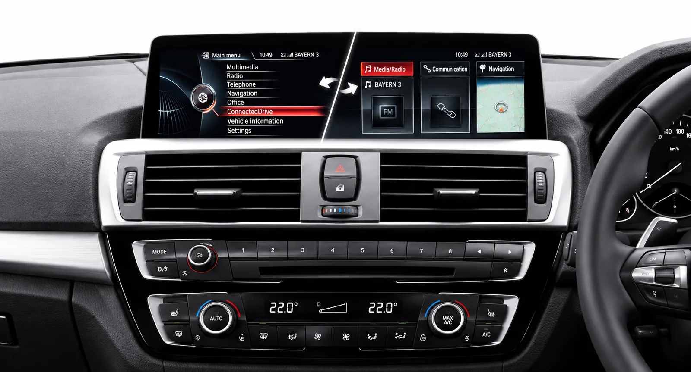

Software upgrade
BMW iDrive Menu Upgrade
Adding modern Apple CarPlay functionality through a software upgrade. You will get the multimedia interface and features of NBT Evo ID6.
Android Auto is not supported in the factory configuration. To add this feature, please consult with us.